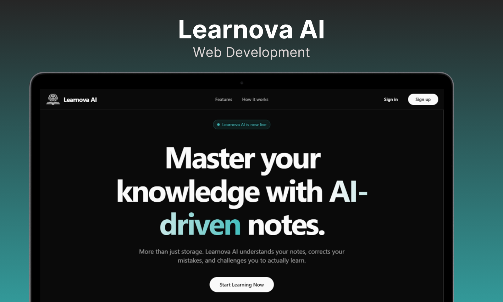
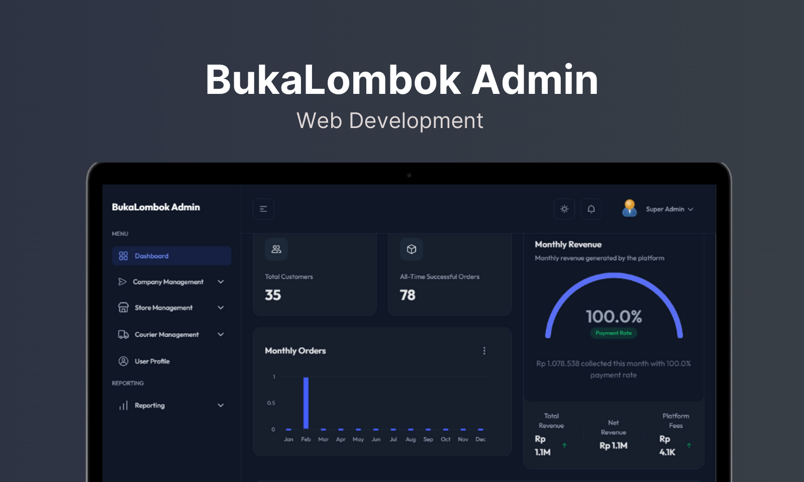
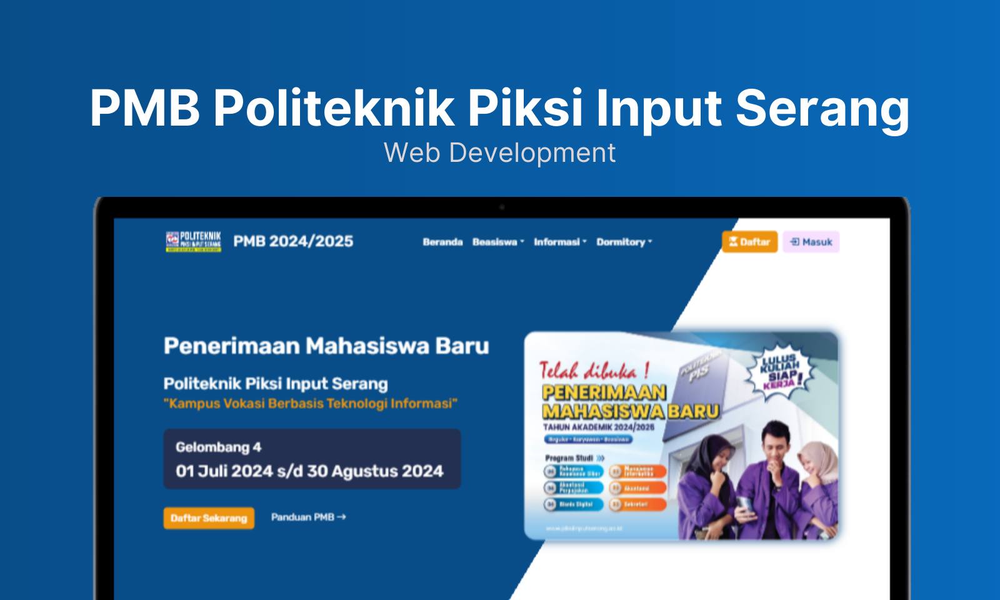

Learnova AI
Platform belajar berbasis AI yang bisa generate quiz dan rangkuman otomatis dari materi yang diupload.
Hey, gue Ariel
Gue build apps. Dari desain sampe deploy, semuanya.
Fullstack Developer yang suka bikin sesuatu dari nol sampai jalan di production. Fokus di modern web tech, dan selalu mikirin user experience.
Sedikit tentang siapa gue dan apa yang gue lakuin.
Bukan sekadar bisa ngoding — gue suka mikirin kenapa sesuatu harus dibuat.
Gue Muhammad Ariel Ariadi, fresh graduate IT yang passionate soal web development. Mulai dari slicing design jadi pixel-perfect UI, bikin API yang solid, sampai setup CI/CD pipeline biar deployment smooth — gue seneng handle semuanya.
Gue percaya developer terbaik bukan yang hapal paling banyak syntax, tapi yang bisa ngeliat masalah dan punya ownership untuk menyelesaikannya end-to-end.
Production-ready stack buat bikin apps yang beneran jalan.
Real projects, bukan cuma tutorial follow-along.

Platform belajar berbasis AI yang bisa generate quiz dan rangkuman otomatis dari materi yang diupload.

Dashboard admin untuk mengelola E-Commerce BukaLombok.

Website penerimaan mahasiswa baru untuk Politeknik Piksi Input Serang dengan fitur pendaftaran online.
Learning by building — always.